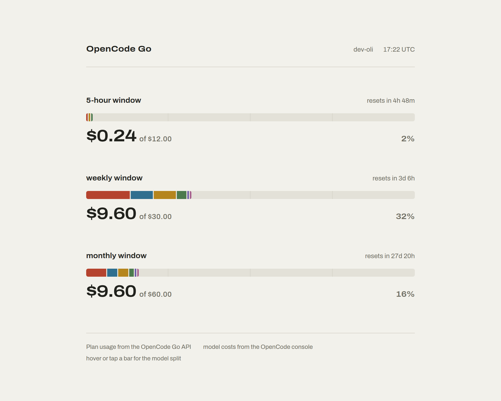
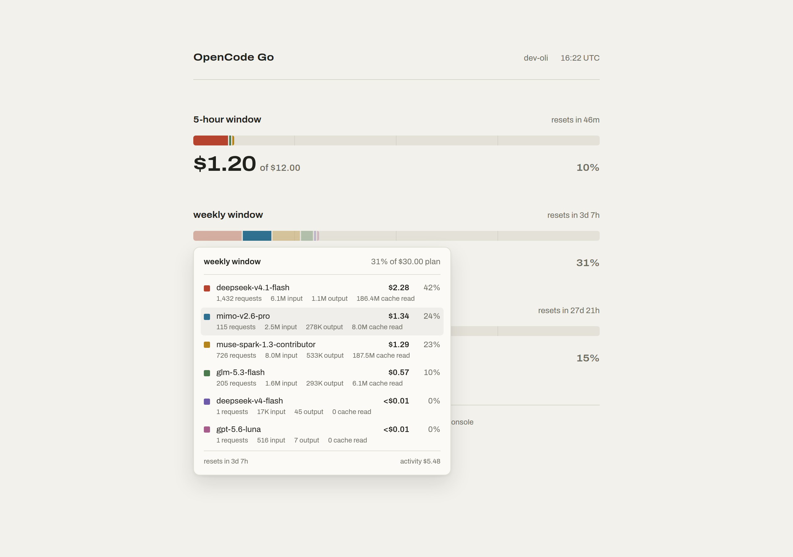

Your OpenCode usage, at a glance.
The rolling five-hour, weekly and monthly plan windows, and every dollar split by model. It reads your own OpenCode data, so nothing leaves your machine.
npx opencode-usage-dash
or the container:
ghcr.io/martinezharo/opencode-usage

- Real percentages and reset times from the OpenCode Go API.
- Per-model costs from the OpenCode console, so the dollars match the website.
- Hover a bar for spend, requests and tokens per model.
- Falls back to your local database. No account, no telemetry.
